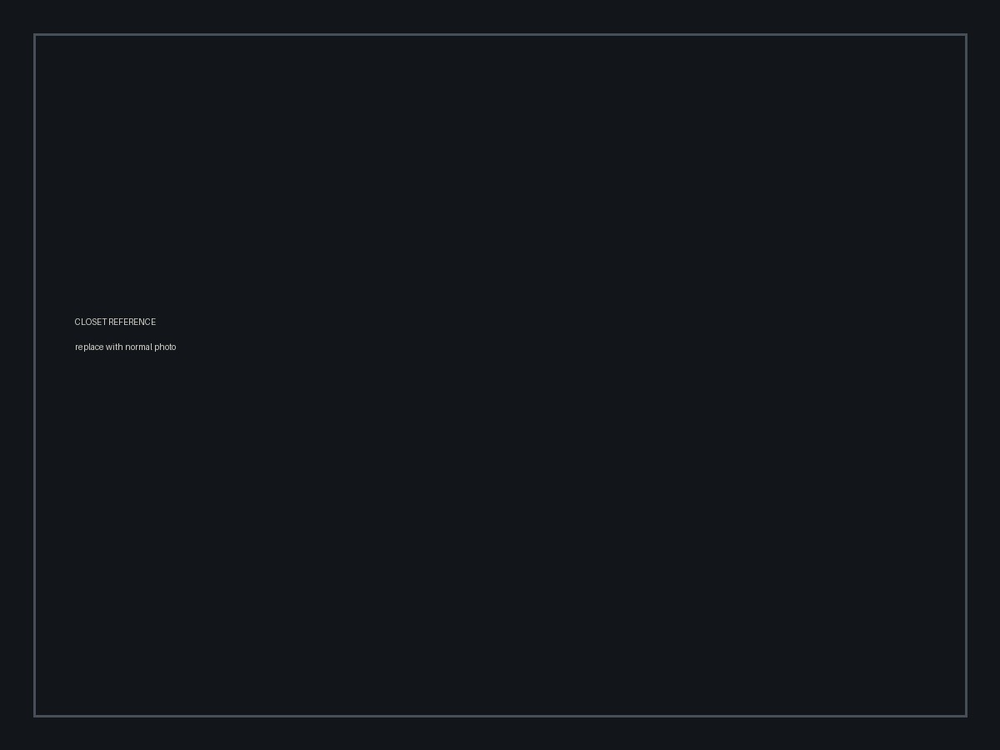
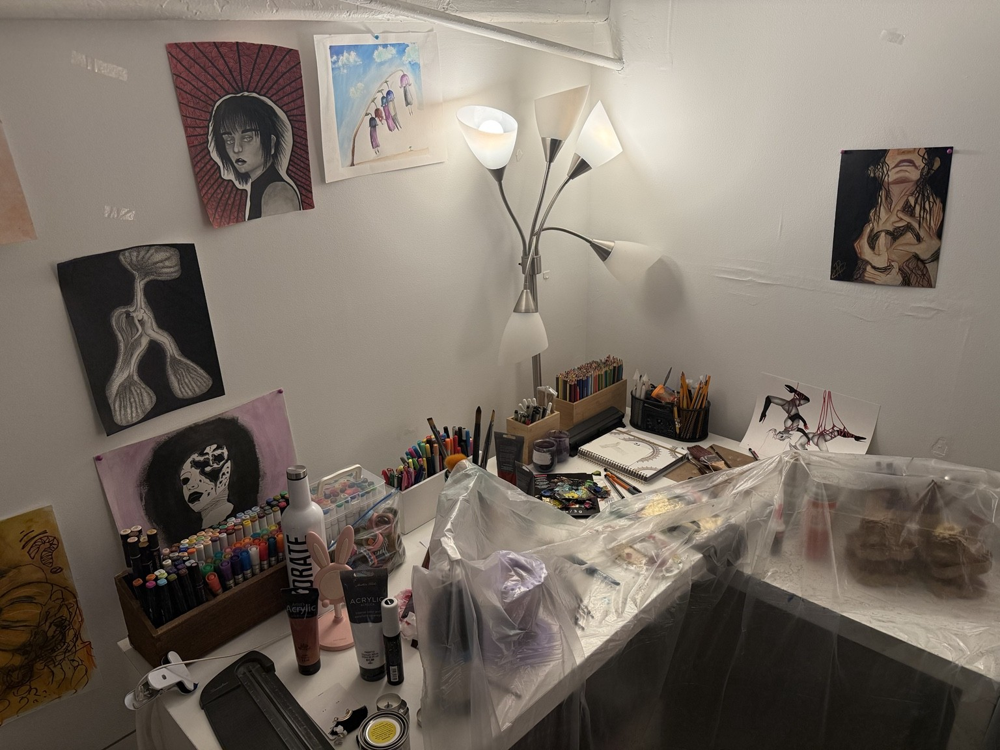

FRAME A // ARTWORK
Verify orientation and physical state.
Authorized access only. This terminal contains materials relating to an active correction within Alpha continuity.
Echo demonstrates advanced knowledge of Meridian field procedure.
Target has shown repeated ability to anticipate Alpha investigative response.
BEHAVIORAL NOTE: Subject consistently selects actions Meridian predictive models associate with F-29 Alpha.
Visual identification withheld under Integrity Directive 7.
ASSIGNED OPERATIVE: F-29 ALPHA
ACTIVATION STATUS: IMMEDIATE
MISSION PRIORITY: CRITICAL
Standard Temporal Integrity teams have been suspended from direct pursuit of C-29 Echo.
Echo has demonstrated an unusual ability to predict Meridian containment procedure, investigative sequencing, and operative response. Previous teams consistently arrived after evidence had been altered, moved, or dispersed.
Predictive analysis determined F-29 Alpha has the highest probability of anticipating C-29 Echo's behavior.
Additionally, the breach occurred inside Alpha's immediate environment. Alpha possesses access to locations, objects, relationships, and contextual information unavailable to an external Meridian team.
FIELD AUTHORITY: Alpha is authorized to independently investigate physical anomalies associated with the breach.
Do not allow familiarity with the environment to compromise objectivity.
Historic infiltration target. Meridian guidance classifies the entity as a strategic corporate risk.
Current assessment: no confirmed relation to the present breach.
Compare the recorded state below against the current physical environment. Any discrepancy may indicate target interference.
Verify orientation and physical state.

Verify object order and placement.

Verify orientation and physical state.
Consolidated events from affected continuities. Review prior to correction authorization.
Correction recommended before convergence threshold is reached.
Raw capture contains almost entirely static and data loss. No continuous speech could be reconstructed. Meridian decoder passes isolated the following probable fragments. Accuracy remains below verification threshold.
FRAGMENT 01 "...Alpha..."
FRAGMENT 02 "...not the source..."
FRAGMENT 03 "...before I arrived..."
FRAGMENT 04 "...three..."
FRAGMENT 05 "...Meridian..."
FRAGMENT 06 "...find me..."
Fragments are incomplete and may be coincidental artifacts produced by signal reconstruction. Operative Alpha is advised not to infer meaning beyond the approved assessment.
Correction authorization cannot proceed until all conditions are acknowledged.
Recovered evidence may contain archive authorization fragments.
ARCHIVE REQUEST ACCEPTED...
RETRIEVING...
SOURCE MISMATCH
UNAUTHORIZED PROCESS DETECTED
ALPHA—
If you're reading this, Meridian hasn't found this channel yet.
They told you I caused the fractures.
Look at their timestamps.
The Darkness was here before I was.
My designation is C-29 Echo.
But that's not my name.
My name is Fernanda Cruz.
I'm you.
Not from your future. Not from your past.
From another version of it.
Meridian sent you to find me because they knew I would think the way you do.
And because they knew you would believe them before you believed yourself.
Meridian will tell you I'm constructing an identity from information I stole. So I'll tell you something they don't have.
You still have people who exist nowhere anyone else can see.
Kevin knows they exist. But knowing about them isn't the same as being there with you.
There are parts of that world you still keep entirely your own.
I know.
Mine have different names.
I crossed into Alpha to warn you, but I can't send you what I know through one channel. Meridian monitors complete transmissions.
So I divided what you need between three people you trust.
One to the person you'd trust with what you can't tell anyone else.
One across an ocean to someone tied to where we began.
One to someone who understands what your hands can create when words aren't enough.
Find them.
If you come across the mark of the crow, do not treat it as hostile.
Crow Industries knows what Meridian is becoming.
If I lose this channel, follow the crow.
And whatever you do—
do not tell Meridian.
— C-29 ECHO
This relay was not issued by Meridian.
External access credential required.
F-29 Alpha,
If you found this channel, then Echo was right about you.
Meridian trained you to believe that Crow Industries was a target to infiltrate, observe, and eventually correct.
What it never told you was why.
We saw the fractures before Meridian admitted they existed. We saw Corrections used to remove problems that threatened Meridian itself rather than the people it claimed to protect.
C-29 Echo came to us after discovering the same thing.
She works with us now.
Not because Crow is innocent. Not because we expect blind loyalty. Because we are willing to ask the question Meridian stopped asking:
Who gets to decide what deserves correction?
Meridian wants order badly enough to rewrite reality to obtain it.
Echo believes you can stop them.
So do we.
If you choose to continue, consider this your invitation to do what your Meridian assignment was supposed to require from the beginning:
Infiltrate. Investigate. Decide for yourself.
The crow does not ask for faith.
Only open eyes.
- CROW INDUSTRIES // EXTERNAL OPERATIONS